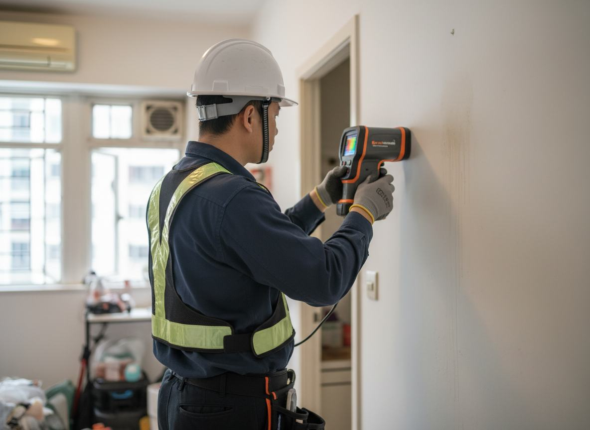
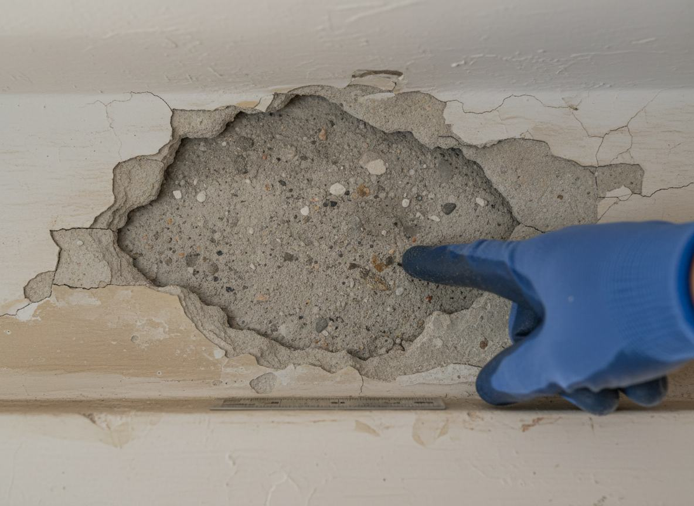
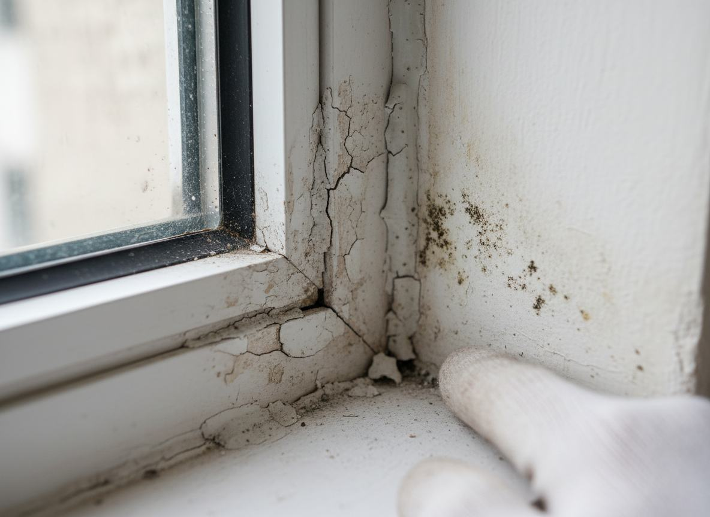
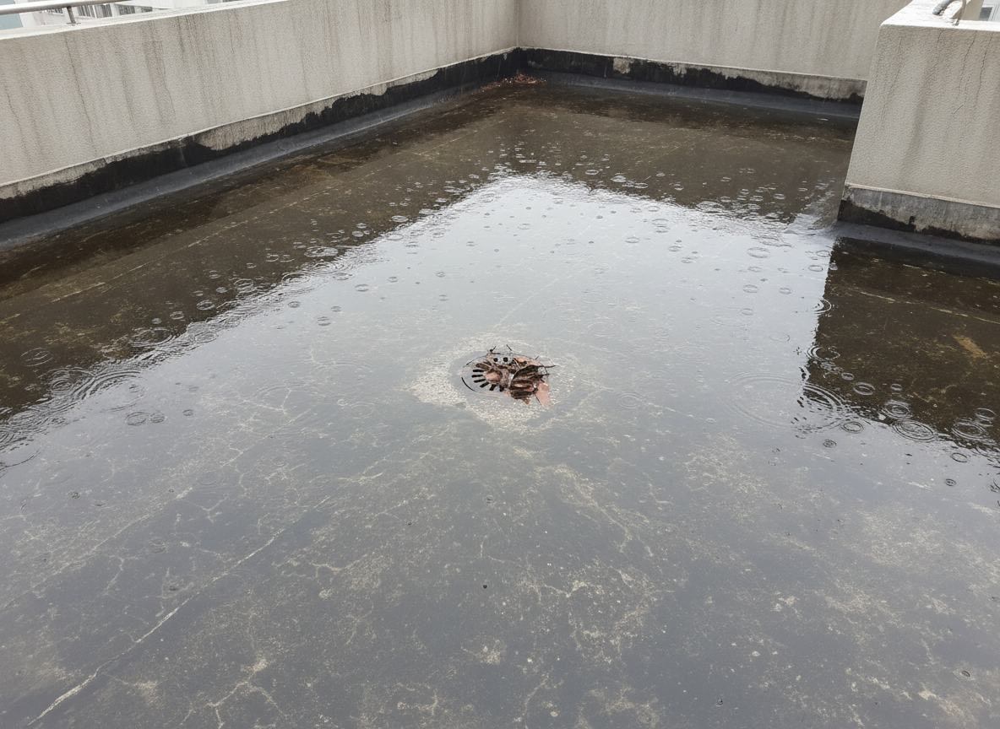
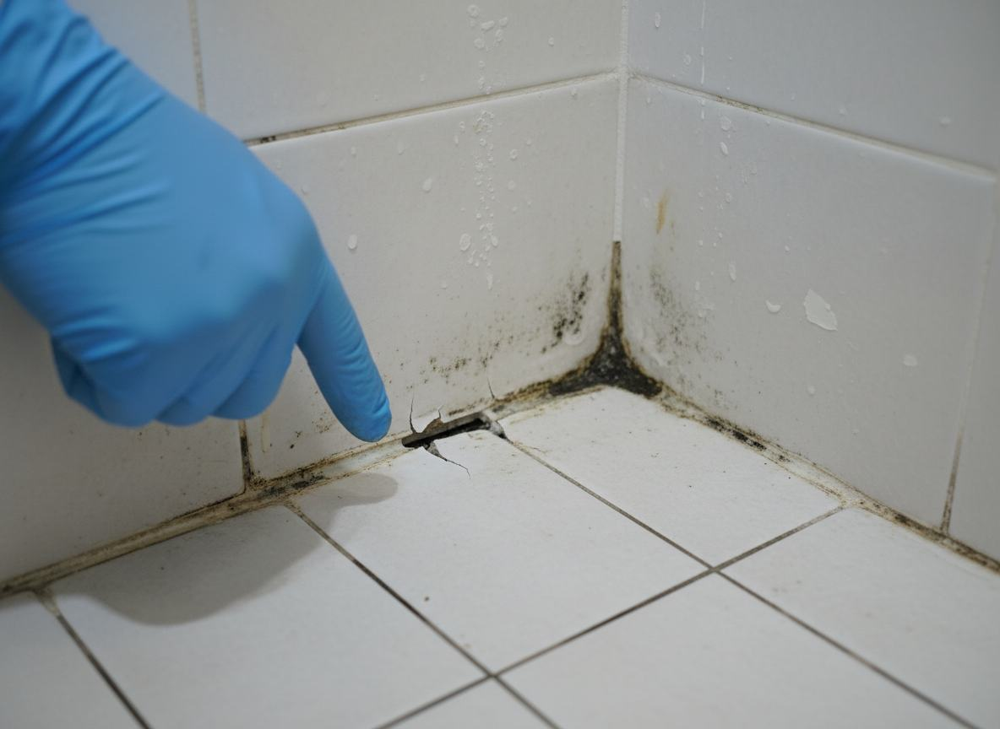
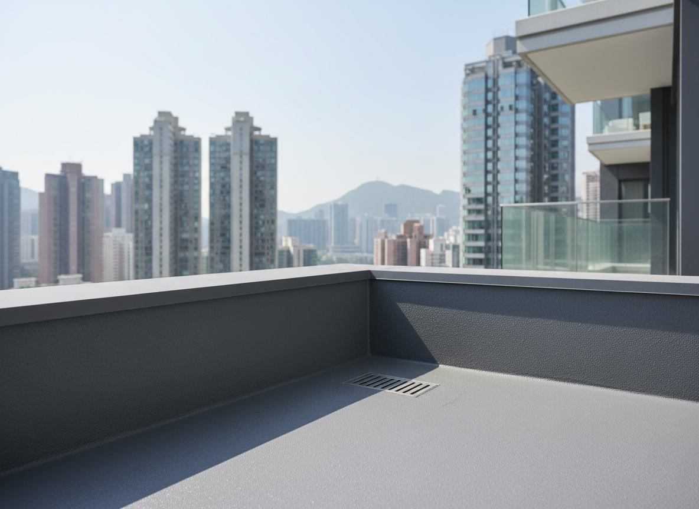
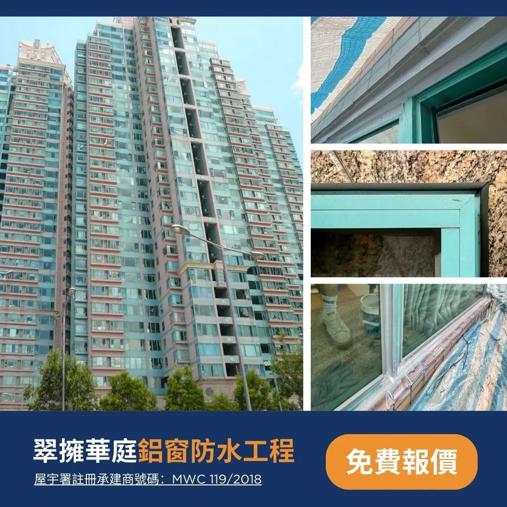
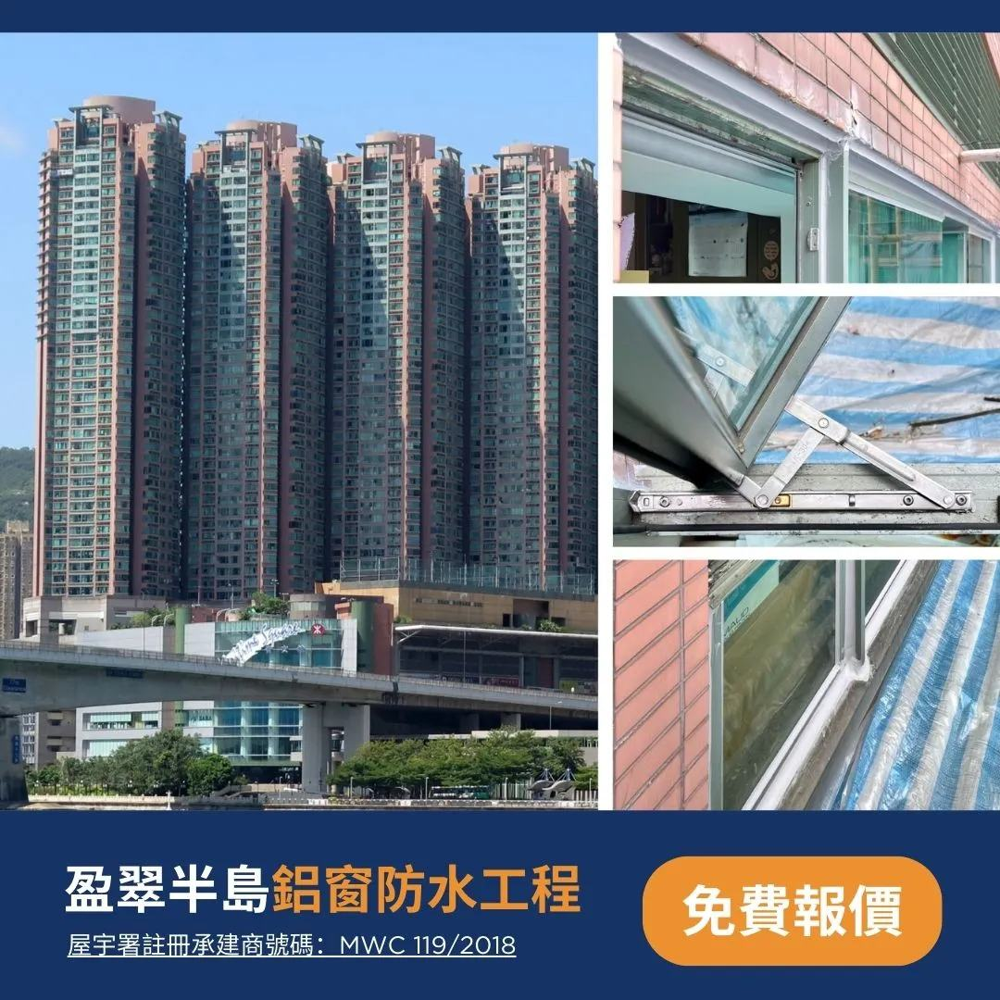
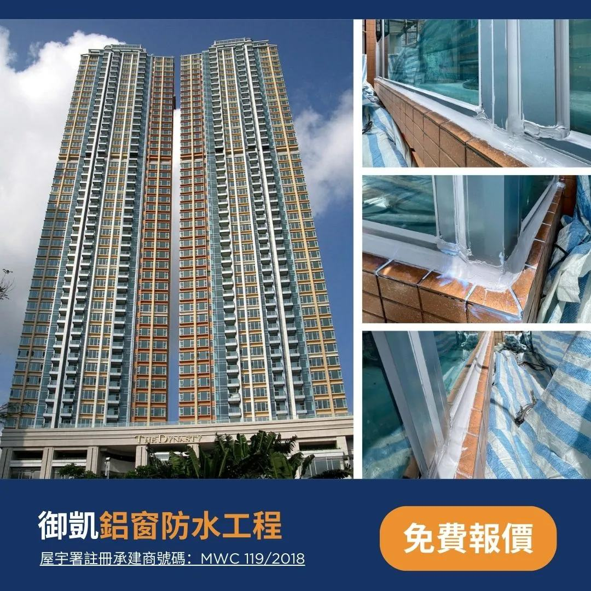
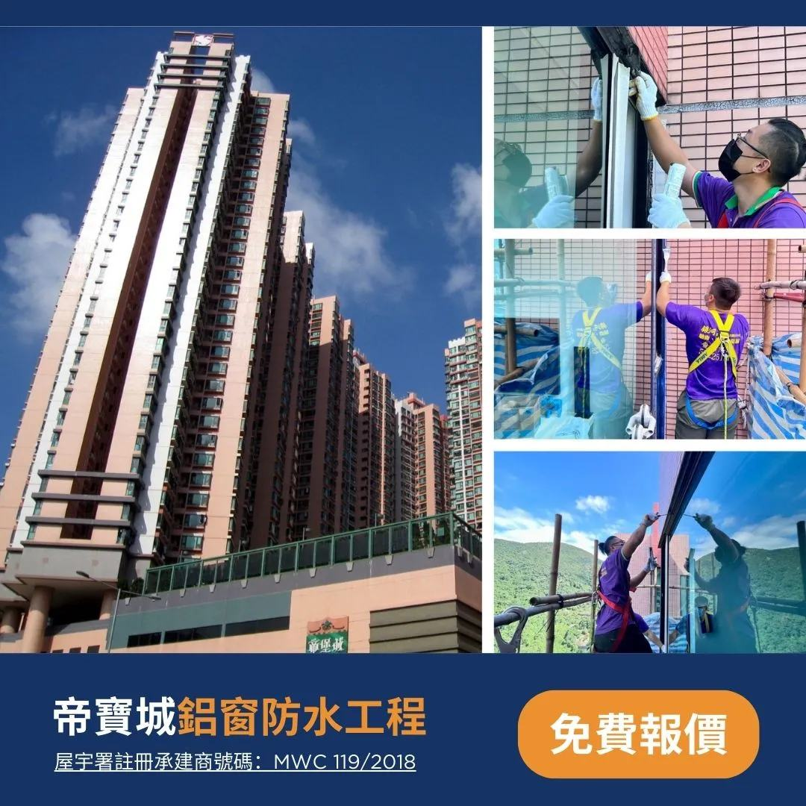

銀河防水深受不同領域的客戶信任
我們不是靠估計，是用科學和技術處理滲漏

準確尋找漏水根源，避免「做完 輪又翻漏」。
工程範圍、工序、價錢與注意事項、每項清楚列明。

收口、轉角、接駁位置重點處理。保證防水效果合乎預期。

牆身起泡發霉、滲水入室。

收口、轉角、接駁位置重點處理，保證防水合乎效果。

天台積水或排水不良，雨後長期滯水，加速滲漏與防水層老化。

浴室防水層失效，水氣滲入牆身地台，易發霉剝落。



滲漏處理最忌在未查明滲漏源頭前便貿然施工。我們會按現場實際情況，檢查滲漏位置、可疑滲水路徑，以及各接駁位與收口位的狀況，並就建議方案方向及處理範圍提出專業建議。
專業儀器尋找漏水根源、精密檢測
請提供滲漏位置的室內／室外相片（同位置不同角度）、說明是否只在落雨時出現或長期潮濕，以及過往是否曾做過維修／防水處理。資料越完整，我們越能更快鎖定可疑源頭，並建議合適的檢查方向與處理範圍。
室內／室外相片
（同位置不同角度）
落雨先漏？
定長期潮濕？
過往有冇做過
維修／防水？





滲漏問題成因複雜，不同位置的滲漏源頭及處理方法各異。勘察讓我們準確判斷滲水源頭、受影響範圍及最佳處理方案，從而提供精準的報價，避免施工後出現遺漏或超支情況。
不一定。我們會根據滲漏情況選擇最合適的方案。部分情況可採用非破壞性方法（如高壓打針灌漿、外牆注射）處理，只有在必要時才建議局部拆除重做。
關鍵在於找準源頭再施工。我們利用專業儀器（紅外線熱像儀、微波掃描等）精準定位滲水點，確保處理的是真正的滲漏根源，大大減低翻漏機會。
長期漏水會導致石屎剝落、鋼筋鏽蝕、霉菌滋生，影響結構安全及居住健康。問題拖延越久，修復費用往往更高，甚至可能引致樓下鄰居索償。建議及早處理。